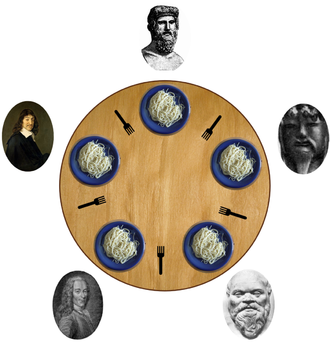

概览¶
在服务器程序中，为了更充分地利用现代 CPU 的多核性能，一般会使用多线程编程的方式来使我们的程序尽可能多地处理并行请求。本节简单介绍 C++ 中常用的多线程编程库以及编程范式。
使用 std::thread 启动多个线程¶
在 C++ 中，要启动多个线程，只需要使用 std::thread 这个类。类的构造函数第一个参数为希望执行的函数，后面的参数则是需要传递给这个函数的参数。当 std::thread 对象被创建的时候，线程就会开始执行。如果我们需要等待线程执行完毕才退出，那么需要调用线程对象的 join() 方法。
#include <thread>
#include <iostream>
void thread_function(int a) {
std::cout << "a = " << a << std::endl;
}
int main() {
std::thread t1(thread_function, 1);
std::thread t2(thread_function, 2);
t1.join();
t2.join();
return 0;
}
如果我们不调用线程的 join() 方法，那么程序结束时将会出错。
$ g++ mt1.cpp -lpthread
$ ./a.out
terminate called without an active exception
[1] 1245899 abort (core dumped) ./a.out
如果我们希望启动线程后就不需要关心线程的状态，可以调用 detach() 方法将线程独立出去。
#include <thread>
#include <iostream>
void thread_function(int a) {
std::cout << "a = " << a << std::endl;
}
int main() {
std::thread t1(thread_function, 1);
std::thread t2(thread_function, 2);
t1.detach();
t2.detach();
return 0;
}
Info
std::thread 的构造函数默认使用拷贝传值。这意味着如果你的函数期望收到一个引用，简单地向线程构造函数传入变量是不行的，这种行为在现代 C++ 编译器中会被视为编译错误，就像下面的代码一样：
#include <thread>
#include <iostream>
void thread_function(int &value) {
// 期望收到一个引用，这样就能改变它的值
value++;
}
int main() {
int value = 0;
std::thread t(thread_function, value); // 直接传入 value
t.join();
std::cout << value << std::endl;
return 0;
}
根据 cppreference.com，我们需要在传入引用时使用 std::ref 来包裹变量名，即将上面代码的 std::thread 构造函数调用中的参数 value 改为 std::ref(value)。
当函数需要常量引用时，我们也可以使用 std::cref。
线程间同步¶
在很多场景下，不同的线程之间需要传递信息以达成某种协作关系。
例如：在一个基于多线程技术的数据计算软件里，有一个线程负责读取用户输入的数据，还有若干个线程负责根据输入的数据执行相当费时的查询任务。在这一场景下，我们通常将前一个线程称为生产者线程，将后一个线程称为消费者线程。它们之间需要传递用户输入的数据来让整个软件的功能得以实现。
为了完成线程之间的交流，有一种办法是共享内存。它利用了一个事实：由同一个进程产生的不同线程，共享了原进程的内存空间。这意味着一个线程能够访问的变量，大部分也能够被另一个线程所访问。下面我们展示一段实现了上述软件功能的代码：
int list[100]; // 用来存储用户输入的数据，每一份数据用 int 表示
int index = -1; // 用 index 指向当前还没有被处理的数据
void producer() {
while (true) {
// 这里忽略对 list 是否饱和的检查
// 下面获取用户输入的数据并写入 list 中，如果用户
// 没有输入那么线程就会卡在 read_data() 调用内部而不会返回
list[index + 1] = read_data();
index++;
}
}
void consumer() {
while (index >= 0) {
int data = list[index--]; // 从 list 中拿到数据
do_calculate(data);
}
}
上述代码看上去似乎可以正常工作，然而真正运行的时候我们很可能看到一些错误的现象，例如用户输入了一份数据，结果两个消费者线程都拿到了这个数据，重复地对数据进行了计算。又如，用户输入了新的一份数据之后，始终没有等到消费者线程的输出。还有可能我们的程序会在输入数据后直接崩溃（访问了无效的数组下标）。这段代码充满了问题！
竞态条件¶
导致上述现象的原因是：多个线程对 index 变量竞争访问与修改，导致了竞态条件（race condition）的产生。简单来说，竞态条件的发生是因为：某种操作的结果依赖于两个或多个线程进行的操作的相对顺序。
我们解释其中一个现象——重复运算的原因。由于多个线程之间并发运行，它们中的代码的执行顺序是相互独立的。因此当生产者线程得到了用户的输入，将 index 置为 1 之后，假设有两个消费者线程 A 和 B，它们都尝试读取 index 的值并发现它已经大于等于 0，于是顺利地进入了循环内部。这种情况也有可能不会发生，当 A 线程动作快一些在完成了 index-- 之后，B 线程就不会进入循环了。
正如我们前面提到的，并发线程的代码执行顺序相互独立，因此我们不能对它们会以何种顺序访问共享变量 index 作出任何假设，这和竞态条件发生的原因相呼应。有兴趣的读者可以自行推导其他两种情景产生的原因，它们都是基于某种有问题的变量访问顺序。
Info
上述的例子准确来说应该叫做数据竞争（data race），它只是竞态条件的其中一种，却也是计算机软件里最常见的种类之一。本文中的竞态条件指的都是数据竞争。
使用 ThreadSanitizer 检查数据竞争
在编译时打开 -fsanitize=thread 选项，即可在程序运行的时候检查数据竞争问题。
互斥量¶
为了在共享内存时避免竞态条件导致的错误结果，人们发明了许多手段。其中最简单的手段是使用互斥量（mutex）保护存在竞态条件的变量。将上文的代码片段修改为如下所示就能解决竞态条件导致的问题：
int list[100]; // 用来存储用户输入的数据，每一份数据用 `int` 表示
int index = -1; // 用 `index` 指向当前还没有被处理的数据
std::mutex m;
void producer() {
while (true) {
// 把会阻塞线程运行的操作单独放出来
int data = read_data();
m.lock();
list[index + 1] = data;
index++;
m.unlock();
}
}
void consumer() {
while (true) {
m.lock();
if (index < 0) {
m.unlock(); // 在使用 `continue` 和 `break` 语句时非常容易忘记进行 `unlock()`
continue; // 没有新数据时直接跳过本次循环
}
int data = list[index--];
m.unlock();
// 下面复杂的计算不需要访问 `index`
// 因此不会出现竞态条件
do_calculate(data);
}
}
对互斥量进行 lock() 操作是在尝试获得一个“独享权”，一旦当前线程获得了这个权利，其他线程在调用 lock() 时就无法获得这种权利，一直被阻塞无法进行下一步操作。直到拿到了权利的线程通过 unlock() 放弃权利之后，被阻塞的线程们又会进入下一轮争夺。由此，我们通过使用互斥量，在 lock() 和 unlock() 的代码之间确保了：在任意时间点，最多只有一个线程会访问 list 和 index，竞态条件不复存在。
所谓的“独享权”也被比喻为锁，就好像上锁之后别人就无法进门，直到自己解锁才行，这也是上述两个函数名字的由来。而且也由于上面这种常见的用法，互斥量也被称为互斥锁。另外，lock() 和 unlock() 包裹的这段代码被称为临界区（critical section），因为它们访问了相同的共享变量。
尽量缩短临界区
为了提高并发度以及执行效率，临界区应该尽可能短，只包含对需要保护的数据结构的操作即可。
例如，我们需要把 read_data() 放到 lock() 前面，因为我们提到这个函数会阻塞当前函数的运行，直到用户提交新的数据。因此假如我们放在 lock() 之后，当用户迟迟不提交数据时，我们的消费者线程也不能够访问临界区，导致程序工作的低效率。
同理，将 do_calculate() 放到 unlock() 之后也是为了尽可能缩短线程持有锁的时间，提高线程的并发效率。
互斥锁与操作系统
互斥锁会在没有拿到锁之后阻塞当前线程的运行，并让操作系统将 CPU 的执行切换到其他线程，这里会发生线程上下文切换，需要消耗很多 CPU 指令周期，有时候消耗的时间甚至比持有锁时修改变量的时间还长。不过，现代的互斥锁通常会在挂起线程之前尝试使用一段死循环来检查锁的状态，一段时间后还拿不到锁再挂起。更多信息可以参考 futex。
配平 lock() 和 unlock()
和 new 和 delete 需要成对出现一样，lock() 和 unlock() 也需要成对调用，而且必须交替调用，不能连续 lock() 两次，也不能连续 unlock() 两次。特别是当我们在循环中使用了 continue 或者 break 时，我们很容易忘记在其之前进行 unlock()。
假如我们在上面的 consumer() 函数里漏掉了 m.unlock()，那么我们会在之后的循环里又一次调用 m.lock()，这对 C++ 来说是未定义行为（undefined behavior），会导致一些无法预料的负面后果，我们的程序可能会直接崩溃。
为此，我们可以利用 C++ RAII 的特性，来帮我们自动加锁和解锁。标准库中提供了 std::scoped_lock，它在构造函数中自动调用 lock()，并在析构函数中自动调用 unlock()。我们可以把 consumer() 的代码修改为如下所示：
void consumer() {
int data = -1;
while (true) {
{
std::scoped_lock lock(m); // 构造函数自动调用 `m.lock()`
if (index < 0) continue; // 离开本次循环时，`lock` 的析构函数会被执行
data = list[index--];
} // 离开本代码块时，`lock` 的析构函数也会被执行
do_calculate(data);
}
}
使用 RAII，特别是带有默认构造函数的类时，务必需要注意是否给变量起了名字。例如：
void func() {
std::scoped_lock(m);
}
如果没有起名字，那么这个语句可以有两种理解：一是调用了 std::scoped_lock 的以 m 为参数的构造函数，然后将这个变量销毁。二是使用默认构造函数，声明了一个名字为 m 的 std::scoped_lock 对象。也就是等于
void func() {
std::scoped_lock m;
}
在这种有歧义的语法下，C++ 会遵守的规则是：如果一条语句看上去是声明，那么它就是声明。也就是说实际上如果不给对象起名字的话，上面的代码实际上会按照第二种理解去编译。在这种情况下，互斥量根本没有上锁。
原子量¶
我们在上文介绍过竞态条件的产生源于多个线程执行的相对顺序无法确定，使用互斥量可以确保在任意时候临界区最多只有一个线程在访问，使得对数据的读取以及修改顺序满足我们的要求，以此来解决竞态条件问题。除了互斥量，还可以使用原子量（atomic variables）来解决一个变量的数据竞争问题。
原子量从英文名就能看出，它和普通变量一样，但它却保证了原子性。在 C++ 中，原子性的含义是：多个并发线程访问具有原子性的对象时不会造成数据竞争，也不会导致未定义行为。原子量可以理解为一个仅限于访问和修改这个变量的临界区。和使用互斥量相比，在硬件支持的情况下，原子量会直接编译成为硬件的原子指令，开销会更小，而互斥量则可能需要涉及到操作系统对线程的挂起和调度。
如果将上述使用互斥量的例子改为使用原子量，我们可以将线程竞争访问的 index 变量改为原子变量：
int list[100];
std::atomic_int index = -1; // 使用原子量作为 `index`
void producer() {
while (true) {
int data = read_data();
list[1 + index.fetch_add(1)] = data;
}
}
void consumer() {
while (true) {
int i = index;
if (i < 0) continue;
while (!index.compare_exchange_weak(i, i - 1)) {
if (i < 0) break;
}
if (i < 0) continue;
do_calculate(list[i]);
}
}
上面的代码看上去比互斥量要稍微复杂一些，我们先来看看其中 fetch_add() 函数和 compare_exchange_weak() 函数的使用：
fetch_add()函数的作用是：原子地获取index的值，然后将它加一，再存入index中。这整个过程是原子的，不会有其它线程对index的访问穿插在这几步之间，导致数据竞争的出现。上面代码中的index.fetch_add(1)其实就是普通变量里i++的原子量版本。compare_exchange_weak()函数的作用是：比较原子量当前的值和给定的值（第一个参数），如果相等则将原子量的值设为第二个参数的值并返回true；如果不相等则将第一个参数的值设为原子量的值，并返回false。此函数做的事情也是原子的。 我们首先使用int i = index;将原子量当前的值读入本地变量i里，然后我们准备对它进行减一操作，然后消费新的数据。不过事情并没有这么简单。在读取index到修改index之间，有可能另一个线程也做了同样的事情，导致数据竞争的出现。为此，C++ STL 为原子量提供了一个功能强大的compare_exchange_weak()函数，用来给当前函数检查是否有其他线程先于自己一步完成了对原子量的修改。 举个例子，假如现在producer()将index的值设为了0，有两个消费者线程 A 和 B 都进行了int i = index，读到了i均为0。此时，A 进行compare_exchange_weak()函数，将index的值设为了i - 1也就是-1，并调出了循环，成功地消费了此数据。B 在进行相同函数时，发现index当前的值已经不再等于它先前拿到的i了，于是i被设置为i - 1，也就是-1，并先后经过break和continue重新开始新一轮消费循环。像这样通过引入原子量，我们在多个并发线程对index的访问之间引入了对访问顺序的约束，避免了数据竞争的产生。
在使用原子量和互斥量解决多线程并发访问造成的冲突问题时，通常会使用两种不同的范式。使用原子量的时候，通常是先尝试修改数据，修改数据的时候可能有多个线程同时操作，然后再检查数据结构是否有写冲突，发生冲突了就回滚操作，然后重试，这体现为一个基于 CAS 条件的循环，这是一种乐观的（Optimistic）方法，因为它认为访问不冲突的概率大于冲突的概率。
而使用互斥量的时候，则是直接对数据结构加锁，同时只有一个线程在修改数据，修改完了再解锁，允许下一个线程进入临界区，等于将线程排队。这是一种悲观的（Pessimistic）方法，因为它认为发生冲突的概率大于不冲突的概率。
原子量和互斥量各有优劣，原子量缩小了临界区，增大了并发度，但是在冲突较多的时候需要大量地回退和重试，而且不好写。互斥量的临界区较大，并发度低，在使用不当的情况下可能出现死锁问题，但是理解起来比较容易，也不需要回退和重试。
那么应该什么时候使用原子量，什么时候使用互斥量？从开发者的角度来讲，在项目开发的初期，推荐使用互斥量，因为它编写和理解起来都比较简单。而在项目稳定后，经过性能分析，确定了互斥量是性能瓶颈之后，再想办法修改为使用原子量的并发控制。而且，使用原子量编写一个数据结构很容易，但是编写一个正确的数据结构是一个非常困难的问题，需要严苛的测试甚至是严格的数学证明。在工程实践中，建议也是直接使用经过大量测试以及验证的成熟的数据结构库。
原子量的组合不是原子操作
一种容易犯的错误是以为多个原子量结合在一起是一个原子操作。请记住，每个原子量都是一个单独临界区，临界区之间哪怕没有其他指令，也是可以穿插操作的。
compare_exchange_weak() 与 compare_exchange_strong()
compare_exchange_weak() 是 C++ 11 STL 提供的 CAS（compare and set）操作的实现之一，另一个实现是 compare_exchange_strong()，二者的区别在于：前者一般会用在 while 循环里，因为此函数有可能会出现“假阴性”现象，也就是第一个参数的值和原子量的值明明一样，函数却返回了 false（但不会修改第一个参数的值）。之所以有这种现象是因为在一些硬件上，原子量是使用条件存储的方式实现的，只要原子量发生了写入，哪怕值是一样的，也会认为这个原子量被修改了。而后者则不会有这种现象，它总是会比较值。
没有特别的理由的情况下，一般使用 compare_exchange_weak() 即可。
内存一致性模型
原子量提供的这些函数都可以接收额外的 memory_order 参数，它是 C++ 提供给程序员来指示编译器以及 CPU 对代码的重排程度的标识。在上面的例子里，我们其实可以使用 memory_order_consume 和 memory_order_acquire 来进一步提升原子量访问的性能。简而言之，在现代的 CPU 体系结构中，访存指令是允许重排的，唯一的限制是它们在一个核上是和程序的指令顺序一样的。而当一个核试图访问另一个核读写的内存地址的时候，才有可能看到和顺序不一致的情况。简而言之，memory_order_relaxed 标识该原子操作的以及其他访存操作的顺序无关紧要，允许最大程度的乱序；memory_order_release 标识该原子指令前的访存操作不可以乱序到该原子指令后，通常用于“发布”一个更改，例如将数组长度加一；而 memory_order_acquire 则标识该原子指令后的操作不能被乱序到该原子指令前，通常用来“获取”更改，例如获取最新的数组长度。memory_order_seq_cst 是最为严格，也是默认的标识，意味着该原子操作前后的访存操作都不能穿越该操作乱序，而且所有核心看到的修改顺序是一致的。
更多有关 Memory order 的话题已经超出了本文的讨论范围，相关资料可以查阅 cppreference.com。
条件变量¶
前面两个例子分别使用互斥量和原子量来防止数据竞争，但是在生产者还没有产生新数据，且 list 为空的时候，所有的线程都在不停地通过循环来检查有没有新的数据，这种行为被称为忙等（busy waiting），也就是说它们的 CPU 时间全部花在检查有没有新数据上了。这就好像你想买一个东西，到商家那去看看有没有货，但是商家说没有货了，这时候你还是不停地刷新页面，看看货到了没，这就有点浪费时间了。
如果消费者线程能够在等待的时候不再消耗 CPU 时间（例如进入休眠态），而是在生产者产生新数据时再进行下一步操作，我们就能够进一步提升 CPU 的利用效率了。遇到这种需要等待某个条件发生的时候，可以使用条件变量（condition variable）。这就好像，你留个电话给商家或者点个到货提醒按钮，让他记得在到货的时候打个电话给你，这时你就可以去干别的事情，不用浪费时间一直看有没有到货了。
条件变量可以理解为一个队列，队列中存储的是等待的线程。消费者线程通过 wait() 将自己添加到队列中；生产者线程通过 notify_one() 函数来唤醒队头的线程，也可以通过 notify_all() 函数来唤醒所有线程。
我们使用条件变量来改善上文中基于互斥量的例子：
int list[100];
int index = -1;
std::mutex m;
std::condition_variable cv; // 声明条件变量
void producer() {
while (true) {
int data = read_data();
{ // 使用 scoped_lock 来自动管理互斥量
std::scoped_lock lk(m);
list[index + 1] = data;
index++;
}
cv.notify_one(); // 唤醒等待队列里的一个消费者线程
}
}
void consumer() {
while (true) {
int data;
{
std::unique_lock<std::mutex> lk(m);
cv.wait(lk, [] { return index >= 0; });
// 从这里开始，条件变量保证：此时满足 index >= 0 且持有互斥量
data = list[index--];
} // 离开此作用域时，互斥量自动被释放
do_calculate(data);
}
}
注意 consumer() 中的 cv.wait() 调用。它的作用是：将当前线程加入等待队列，然后释放互斥锁，让其他线程有修改共享状态的机会。当线程被唤醒后，使用给定的 unique_lock 重新保护临界区，然后检测函数的返回值，当返回值为 true 时函数返回，程序继续执行；否则，释放锁并再次阻塞当前线程。因此，C++ 中的互斥量总是会搭配一个互斥量进行使用。
Spurious Wakeup
由于各种原因，通过 wait() 而被阻塞的线程有可能会在条件变量并没有被调用 notify() 等函数时被唤醒，这种现象被称为 spurious wakeup。此时等待线程会拿锁，然后检查输入的函数的返回值，此时返回值一般为 false（因为此时确实没有新数据），然后再一次进入阻塞状态。在这个过程中没有发生数据竞争。
我们还可以尝试将 producer() 中的 cv.notify_one() 改为 cv.notify_all()，它会唤醒所有等待线程，但与此同时我们只输出了一个新数据。结果是：等待线程只会有一个拿到这个新数据，其他线程会再一次进入阻塞状态，仍然没有数据竞争的出现。
轮询与等待队列
在繁忙的程序中，队列可能几乎每时每刻都有数据产生，此时直接使用循环轮询，避免使用互斥量以及条件变量，可能会取得更高的性能，更加充分利用 CPU。
信号量¶
信号量（Semaphore）是操作系统提供的另外一种提供线程间同步能力的工具。它本质上是一个存储了数字的变量。线程可以对信号量进行 P 操作和 V 操作，它们具体做的事情如下：
- P 操作：将存储的数字减去 1。如果减去 1 之后数字大于 0，那么操作完成；如果等于 0，通过系统调用阻塞当前线程。
- V 操作：将存储的数字加上 1。如果加上 1 之后数字大于 0，那么通过系统调用唤醒一个被 P 操作阻塞了的线程。
操作系统保证 P 操作和 V 操作都是原子的，不会出现竞态条件。因此我们可以放心地在多线程并发环境下使用信号量。
关于信号量，一个形象的比喻是餐厅里的座位总数。当顾客尝试占用一个座位时，进行了 P 操作。此时存储的数字就是空闲的座位数量，当座位数量大于 0 时，占座成功；否则，顾客需要在店门外等待。当其他顾客离开时，进行了 V 操作，有了新的空闲座位，这时店门外等待的顾客就能进来。
Info
容易发现，如果我们创建一个初始值为 1 的信号量，那么它在功能上就等同于一个互斥量了。进行 P 操作相当于上锁，进行 V 操作相当于解锁。
P 操作和 V 操作名字的由来
信号量的概念其实是由荷兰计算机家 Dijkstra 提出的，他在论文里用荷兰语 Passering 和 Vrijgave 两个单词来分别形容上述的两个操作。
Dijkstra 为计算机并行编程做出了卓越贡献，我们很快就会在后文看到他提出的关于并发的一个经典的问题。
在 Linux 中，信号量主要有两种实现：System V Semaphore 和 POSIX Semaphore。其中后者较为常用，因此接下来简单介绍后者。
POSIX Semaphore 相关的 API 位于头文件 semaphore.h 中，P 操作对应 sem_wait 函数，V 操作对应 sem_post 函数。
信号量与异常
POSIX 信号量的 sem_post 可能出现异常，导致函数返回 -1，原因为以下其中一种：
- 信号量无效，例如为
NULL。 - 信号量存储的数字大小已经达到上限。
sem_wait 也可能出现异常而导致线程从阻塞中恢复，但此时信号量未被减 1。例如当前线程收到了信号时，对 sem_wait 的调用就会被打断而返回。
C++ 20 中的信号量
C++ 20 标准向 STL 引入了一套信号量工具，基本的用法依然是 P 操作和 V 操作。具体请参阅相关文档。
死锁与活锁¶
在使用互斥量或原子量时，除了注意分析临界区的范围或者选用正确的原子操作以外，我们还必须注意死锁（Dead lock）与活锁（Live lock）的问题。
死锁¶
死锁一般指的是：竞争访问某些资源的一些线程因为互斥量的使用不当，导致它们处于永久阻塞的状态。在这种状态下，程序一般会直接失去响应不再可用。比较典型的会发生死锁的情况是：
- 甲线程为了拿到 X 资源，试图拿到 X 资源的互斥量，但是这个互斥量已经被乙线程加锁。
- 乙线程为了拿到 Y 资源，试图拿到 Y 资源的互斥量，但是这个互斥量已经被甲线程加锁。
此时两个线程都在等待对方放弃锁，陷入了一种永久阻塞的死锁状态。前文中我们忘记在循环中配平 lock() 和 unlock() 时可能就会导致这种死锁，此时甲线程和乙线程都指同一个线程，X 和 Y 资源也指同一个资源。
另一些例子和要实现的数据结构有关，这种死锁问题一般很难发现。一个比较著名的例子是哲学家就餐问题（Dining philosophers problem）。我们在设计链表结构的时候就容易出现和它类似的问题。
哲学家就餐问题
哲学家就餐问题于 1965 年被 Dijkstra 提出。如下图所示（图片来自维基百科）：

有五个哲学家在桌子上准备吃面，桌子上只有五个叉子。假设面是无限多的，哲学家的胃口也是无限的。并且每个哲学家会依次做以下的事情：
- 思考，直到他拿到了左边的叉子。
- 继续思考，直到他拿到了右边的叉子。
- 现在手上有两个叉子了，吃面。
- 吃完之后放下右边的叉子。
- 放下左边的叉子。
- 思考一会，然后重复 1。
如果我们使用互斥量去模拟五个哲学家的这种过程，像下面这样：
void do_loop() {
while (true) {
{
std::scoped_lock lock(left_fork.mutex);
{
std::scoped_lock lock(right_fork.mutex);
std::cout << "i eat" << std::endl;
sleep(1); // 模拟吃面一秒，哲学家吃面都是很快的
}
}
std::cout << "i think" << std::endl;
sleep(1); // 吃面结束后思考一会，哲学家思考一秒相当于平常人思考一天
}
}
然而程序开始运行之后，我们没有看到程序有任何输出！这是因为五位哲学家都对各自左边的叉子上锁了，然后尝试拿到右边的叉子，而此时右边的叉子已经被另一位哲学家上锁。
在半个多世纪以来，解决这个死锁问题的方法层出不穷。请读者自行查阅相关资料。
总体而言，避免死锁的一些经验如下：
- 注意函数的调用顺序。
- 不要在持有锁的时候调用可能会阻塞线程的外部函数，例如
read()或者recv()等需要进行外部 IO 操作的函数。一旦一个线程持有锁并挂起后，只有等到这个线程被唤醒后才能解锁。如果这个阻塞线程的外部函数需要其他持有这个锁的线程去唤醒，那么就会死锁了。 - 如果需要同时使用多个锁，务必保证所有线程都以相同的顺序给他们上锁或解锁。
- 开启编译器的死锁检测功能进行调试。
std::scoped_lock
如果要同时使用多个锁，而且又想避免死锁问题，建议使用 std::scoped_lock，它的构造函数其实可以接收若干个互斥量作为参数：
void foo() {
std::scoped_lock lock(mutex_a, mutex_b, mutex_c);
}
当给定多个互斥量作为参数时，构造函数内部会使用 std::lock() 函数来给输入的互斥量上锁。它的内部会使用死锁避免算法来防止死锁的产生。详情请参阅相关文档。
活锁¶
活锁是并发编程里饥饿（Starvation）问题的一种特例。简单来说，饥饿问题指的是：线程总是无法获得所需的资源以继续运行后续算法。
而活锁具体指的是：一些线程总能够并发执行（消耗 CPU 时间），每个线程都能对局部状态进行修改，但是系统的整体状态却没有推进。关于活锁一个比较形象的比喻是：你和一个人狭路相逢，双方需要靠边避让才能继续走下去，但是你和他总是往同一个方向避让，虽然两个人各自都不停地变换着方向，但在大家看来就是两个人站在那再也没有向前走出一步，堵住了整条走道。